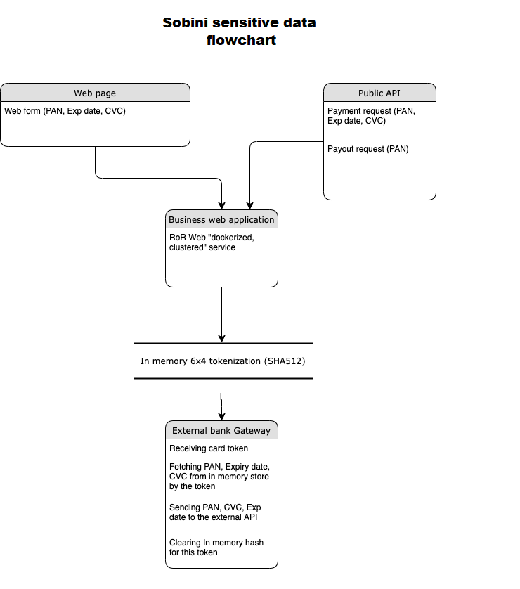
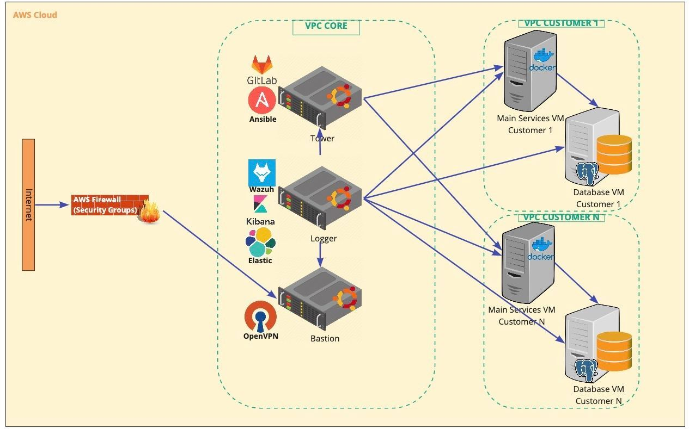

PCI DSS brief info
Basic system information compiled for PCI DSS, audit use only
List of system components
Name |
Description |
Type |
|---|---|---|
business |
Public payment API and checkout form, receives incoming callbacks and sends payment requests to providers |
RoR web-application |
core |
Financial ledger for the operations, uses the logic of calculating commissions and stores the wallet balances |
RoR web-application |
business-sidekiq |
Sidekiq job schedule for business web-service controls the change of transaction status |
RoR application |
business_whenever |
Service for business_sidekiq queues |
RoR application |
core-whenever |
Service for core_sidekiq queues |
RoR application |
core-docs |
Public Core API documentation (rst based) |
RoR web-application |
flexy-commission |
Commission calculation application |
Python app |
flexy-comm-admin |
Interface to regulate commission rules |
Python web-app |
flexy-guard |
Payment filtering web-service |
Python app |
flexy-guard-admin |
Web interface and admin panel for flexy-guard |
Python web-app |
demo |
Just few static pages for checkout demo |
Python web-app |
tests |
Integration tests for all components |
Python/Selenium web-app |
metabase |
Data analysis web application (reports) |
Java web-application |
wallet-web |
Wallet web application |
RoR web-application |
banking-web |
Online banking web application |
RoR web-application |
settings |
Applications for adjusting the settings of different providers |
RoR web-application |
core-sidekiq |
Sidekiq job schedule for core web-service |
RoR application |
business-docs |
Public API documentation (rst based) |
RoR web-application |
minio |
Static content local storage |
Java web-application |
rate |
Currency rate provider and cache |
Python web-app |
rate-admin |
Web interface and admin panel for rate |
Python web-app |
card-storage |
Encrypted persistent card-storage (not used) |
RoR app |
mongo-express |
Web interface to manage MongoDB |
NodeJS app |
mongo |
Mongo database for storing stats and rates commission rules and counts various counters |
Mongo |
postgres |
PostgresDB - main data storage for core/business/settings apps |
Postgres |
redis |
In-memory data storage, using as fast cache |
Redis |
Sensitive data flow description
Sensitive data objects
PAN (Card number)
CVC/CVV code
Processing sensitive data components
Web page (accepting sensitive data object from the web-form and sending it over HTTPS POST to business web-service)
Public API (accepting sensitive data object from the JSON API request over HTTPS POST and sending it to business web-service)
Business web service accepts sensitive data and stores it in in-memory tokenized hash-table
Generates (business web-service) token using card masked (sanitized) number (6x4)
Posting (business web-service) it as hash {token: [sensitive data]} to in-memory hash table
Interacts (business web-service) using this token with the following system components: flexy-guard service, internally within business web-service
Retrieves (business web-service) using this token sensitive data from in-memory hash table and sends to the 3d party bank acquirer or payment service provider’s API
Logs sanitized sensitive data (6x4 masked card number) to InteractionLogs table in business web-service data-base
Infrastructure specification
For our application infrastructure we need the deployment of servers with provided specification(default recommended configuration)
For the base default PCI DSS deployment we need 5 servers in infrastructure
Bastion server - VPN gateway server for accessing our infrastructure
2 CPU, 2 Gb RAM, 20 Gb SSD
Soft: OpenVPN
OS: Ubuntu 20
Log server - collector of all logs from all servers and all services
4+ CPU, 16+ Gb RAM, 500 Gb SSD
Soft: ELK, Wazuh
OS: Ubuntu 20
Tower(Gitlab) server - server with Gitlab server and tools for deployment. Also gitlab-runner for building we registering on this server
4+ CPU, 8+ Gb RAM, 200 Gb SSD
Soft: Docker, docker-compose, Ansible
OS: Ubuntu 20
Main application server - server with Docker for starting application
4+ CPU, 16+ RAM, 100 Gb SSD
Soft: Docker, docker-compose
OS: Ubuntu 18.04
Database server (PostgreSQL 10+)
2+ CPU, 4+ Gb RAM, 50 Gb SSD
Soft: PostgreSQL Server 11
OS: Ubuntu 20
The map of network relations in our infrastructure
The description of deployment new environment of Sobini product
Creating a Group and project repository in this group for new customer in the newly created and configured Gitlab server.
Creating a user deployer in Gitlab server and setting password for this user and adding SSH key.
Importing our software code to the created repository.
Making all requiring changes to the repository (all the variables in CI-CD branch) in folder cicd/inventories/products/PROJECTNAME/production/group_vars/ files all.yml and vault.yml
On the main application server we deploy Nginx and configure it with our Ansible playbook with a predefined domain name for our application. Adding to the NGINX generated SSL certificates and then all the upstreams and virtual hosts will be ready to use. Can be used as a wildcard SSL certificate or individual for each service (wallet.DOMAIN.TLD, core.DOMAIN.TLD, business.DOMAIN.TLD etc.)
Registering the 2 Gitlab-runners: one Gitlab runner for building images from source(better to deploy on separate VM) and other one for deploying the product (in most cases on server where Docker containers will be started)
In existing project in file .gitlab-ci.yml checking and replacing the tags for stages (replace the default tags with ‘sobini’ word to something with ‘NEWPROJECTNAME’)
In Project settings in section CI/CD we adding all needed variables for build and deploy: REGISTRY_URL, REGISTRY_USER, REGISTRY_PASSWORD, PROD_VAULT and PROJECT_NAME.
In develop or master branch (depends on customer choice of main branch in repository) we creating tag like vX.X.X where X.X.X is a version of our release for production - for example v0.0.1. After that you will see the started new pipeline in section CI/CD. In pipeline you will see the stages for building and deploying application.
The automatic (Auto-…) stages are starting automatically when tagging commit or branch with tag ’vX.X.X’ (X.X.X is version number as mentioned above). The deploy stage is not starting automatically and should be triggered manually by pressing button Deploy to production/Deploy to dev
After deploying the software the new images will be applied on Application server and docker-compose will bring up the services with db migrations if its required.
After that all the services will be available with main domain virtual host that were configured before.